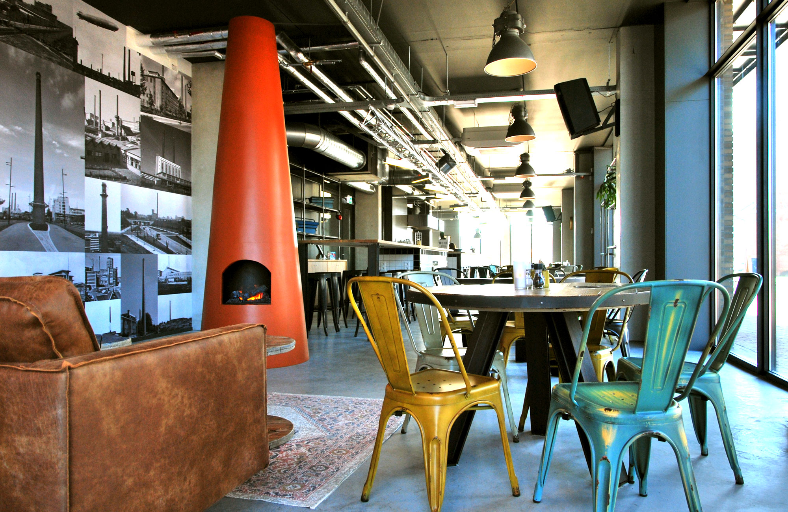
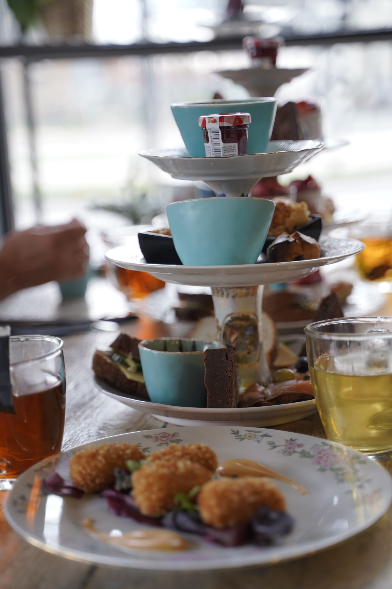
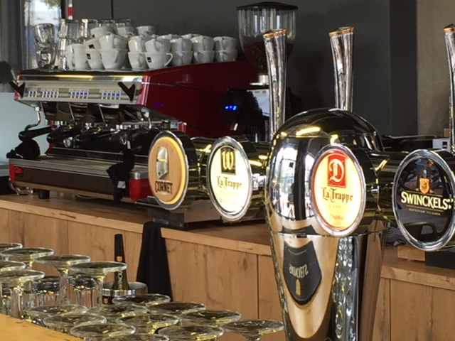
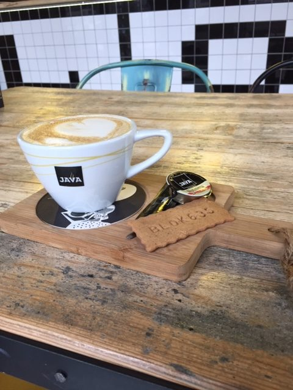
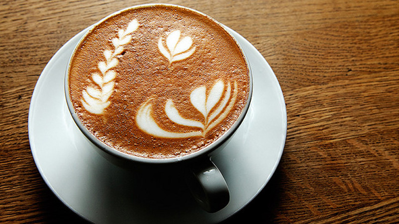

Philitelaan 63, Strijp-S, Eindhoven
Blok 63-S
Lunchen op een unieke plek: bij de schoorsteen, in het culturele en creatieve hart van Eindhoven.
7 dagen per week geopend
Gewoon lekker eten en gezelligheid
Beleef de energie en de open sfeer van Strijp-S. Bij Blok 63-S ontmoeten bewoners elkaar en vinden ondernemers elkaar. Voor ontbijt, lunch, een borrelplank in de namiddag of diner, maar ook voor een high tea, babyshower of condoleance ontvangen we je graag.
We hebben zo'n 80 zitplaatsen binnen en een terras met uitzicht op het bruisende Strijp-S. Er zijn vegetarische en vegan gerechten, en een klantenkaart voor vaste gasten.

High tea
22,50 per persoon, soep en thee inbegrepen
Met je beste vriend of vriendin, je vader of moeder, of gezellig met een groepje collega's. Laat je verwennen met lekkernijen, zoet en hartig, in onze industriële zaak recht tegenover de schoorsteen.
Dagelijks tussen 14.00 en 17.00 uur, alleen op reservering en ten minste 1 dag van tevoren. Zet bij het reserveren in de opmerkingen dat het om de high tea gaat.
Reserveer je high tea
Borrel & bites
Gezellig borrelen met buren, collega's, vrienden of familie? We hebben vier verschillende tapbieren en meerdere speciaalbieren op fles. Toch meer zin in een wijntje, gin-tonic of iets zonder alcohol? Daar zorgen we voor.
Stel je eigen borrelplank samen met bites, en reserveer gerust een tafeltje. Op vrijdag krijg je 10% korting op bier.
Met een groep borrelen buiten de vaste openingstijden kan ook: met speciaalbier en borrelhapjes, een buffet of een 3-gangenmenu. Kom even langs of mail naar info@blok63-s.nl.
Vergaderen en flexwerken
Geen zaalhuur, alleen consumptieprijzen.
Lekkere koffie en goede wifi tijdens je vergadering, of een presentatie geven op ons beeldscherm. Met het Marmitek-streamingsysteem deel je eenvoudig je scherm voor presentaties en werkoverleg. Gewoon werken en genieten in één.
Met een grotere groep? Vraag naar de mogelijkheden: we kunnen bijvoorbeeld de helft van de zaak voor je reserveren. Mail naar info@blok63-s.nl.

Groepen en rondleidingen
Arrangementen vanaf 10 personen
Voor groepen hebben we arrangementen vanaf 19,50 per persoon, met divers belegd boerenbrood, een soepje en een drankje. Ontbijt, lunch, borrel, buffet of 3-gangendiner voor je bedrijf kan ook buiten de reguliere openingstijden, op aanvraag.
Eten en drinken op locatie
Werk je op Strijp-S of in de buurt? We kunnen eten en drinken bij jou op locatie verzorgen. Een online bestelsysteem hiervoor is in de maak.
Rondleiding op Strijp-S, 1,5 uur
Enthousiaste storytelling door de gidsen van Eindhoven247. Proef de sfeer van het grootste binnenstedelijke industriële herontwikkelingsgebied van Europa, waar ooit Philips gevestigd was, en geniet daarna bij ons van een maaltijd met Brabantse gezelligheid.
- Met lunch tijdens de FeelgoodmarketIedere 3e zondag van de maand, open inschrijving, minimaal 5 personen12,50 p.p.
- Met 3-gangenmenuVanaf 10 personen, start rondleiding 16.30 uur45,00 p.p.
- Met luncharrangementOp basis van 10 personenvanaf 350,00
- Met high teaNa 14.00 uur, vanaf 10 personenvanaf 370,00
- Met buffetVanaf 30 personenvanaf 1050,00
Prijzen inclusief btw. De rondleiding is ook in het Engels, Duits en Frans. Annuleren kan tot 1 week vooraf; dan wordt het definitieve aantal deelnemers vastgesteld en gefactureerd.

Events, PSV en de Feelgoodmarket
Tijdens de Feelgoodmarket en andere events op Strijp-S zijn we open. Voor elke thuiswedstrijd van PSV kun je bij ons terecht voor een hamburger, hotdog of biertje: het stadion ligt op 5 minuten lopen. Tijdens evenementen kunnen de openingstijden afwijken; houd daarvoor onze Facebookpagina in de gaten.
Bezoek Blok 63-S
Philitelaan 63-015617 AL Eindhoven
| Maandag | 10.00 – 16.00 |
|---|---|
| Dinsdag | 10.00 – 16.00 |
| Woensdag | 10.00 – 16.00 |
| Donderdag | 10.00 – 16.00 |
| Vrijdag | 10.00 – 19.00 |
| Zaterdag | 11.00 – 17.00 |
| Zondag | 11.00 – 17.00 |
Rond evenementen, PSV-wedstrijden en borrelavonden kunnen de tijden afwijken. Bel ons gerust even.
Bereikbaarheid
Op 5 minuten lopen van station Strijp-S, het Klokgebouw en het PSV-stadion. Parkeren kan voor de deur (betaald, zone 5189) of in de garages P Om De Hoek en P Langs Het Spoor.
Reserveren kan voor 2 tot 14 personen. Je reservering is definitief na de bevestigingsmail.
In English
Blok 63-S was founded by Bram and Yvonne in 2017. Find us next to the chimney on Strijp-S, five minutes' walk from Strijp-S station, the Klokgebouw and the PSV stadium. Around 80 seats inside plus a terrace, vegetarian and vegan options, a loyalty card, and catering on request. Our menu is also available in English: menu (pdf).